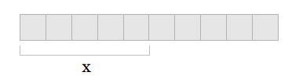

이 저작물은 크리에이티브 커먼즈 저작자표시-비영리 3.0 Unported 라이선스에 따라 이용할 수 있습니다.
3장에서는 Go의 기본 타입에 관해 배웠다. 6장에서는 배열, 슬라이스, 맵이라는 세 가지 내장 타입에 관해 살펴보겠다.
배열은 길이가 고정된, 번호가 매겨진 단일 타입 원소의 나열이다. Go에서는 다음과 같은 형태를 띤다.
var x [5]int
x는 5개의 int 타입으로 구성된 배열의 예다. 다음 프로그램을 실행해 보자.
package main
import "fmt"
func main() {
var x [5]int
x[4] = 100
fmt.Println(x)
}
출력 결과는 다음과 같다.
[0 0 0 0 100]
x[4] = 100은 "배열 x의 5번째 요소를 100으로 설정하라"로 읽으면 된다. 여기서 x[4]가 4번째 요소가 아니라 5번째 요소를 나타내는 것이 이상해 보일 수도 있겠지만 문자열과 마찬가지로 배열도 0부터 인덱스가 시작한다. 배열에도 비슷한 방식으로 접근한다. fmt.Println(x)를 fmt.Println(x[4])로 수정하면 100이 출력될 것이다.
다음은 배열을 사용하는 프로그램의 예다.
func main() {
var x [5]float64
x[0] = 98
x[1] = 93
x[2] = 77
x[3] = 82
x[4] = 83
var total float64 = 0
for i := 0; i < 5; i++ {
total += x[i]
}
fmt.Println(total / 5)
}
이 프로그램은 시험 점수의 평균을 계산한다. 이 프로그램을 실행하면 86.6이 출력될 것이다. 프로그램이 어떻게 동작하는지 살펴보자.
이 프로그램은 동작하지만 Go에서는 이 프로그램을 개선할 수 있는 기능을 제공한다. 먼저 i < 5와 total / 5라고 돼 있는 두 부분을 눈여겨보자. 시험 점수의 개수를 5개에서 6개로 바꿨다고 해보자. 그럼 이 두 부분들을 모두 수정해야 할 것이다. 대신 배열의 길이를 사용하는 편이 더 낫다.
var total float64 = 0
for i := 0; i < len(x); i++ {
total += x[i]
}
fmt.Println(total / len(x))
직접 프로그램을 이렇게 수정하고 실행해 보자. 그럼 다음과 같은 오류가 나타날 것이다.
$ go run tmp.go
# command-line-arguments
.\tmp.go:19: invalid operation: total / 5
(mismatched types float64 and int)
이 문제는 len(x)와 total의 타입이 서로 다르다는 것이다. total은 float64인 반면 len(x)는 int다. 따라서 len(x)를 float64로 바꿔야 한다.
fmt.Println(total / float64(len(x)))
이것은 형변환(type conversion)의 한 예다. 일반적으로 타입을 변환할 때는 함수처럼 타입명을 사용하면 된다.
이 프로그램에서 수정할 수 있는 또 한 가지 부분은 특별한 형태의 for 루프를 사용하는 것이다.
var total float64 = 0
for i, value := range x {
total += value
}
fmt.Println(total / float64(len(x)))
이 for 루프에서 i는 배열에서의 현재 위치를 나타내고 value는 x[i]와 같다. 아울러 여기서는 순회하고 싶은 변수명 다음에 range라는 키워드를 사용하고 있다.
이 프로그램을 실행하면 다음과 같은 오류가 발생할 것이다.
$ go run tmp.go
# command-line-arguments
.\tmp.go:16: i declared and not used
Go 컴파일러는 사용하지 않은 변수를 생성하지 못하게 한다. 여기서는 반복문 내에서 i를 사용하지 않으므로 다음과 같이 수정해야 한다.
var total float64 = 0
for _, value := range x {
total += value
}
fmt.Println(total / float64(len(x)))
_(언더스코어)는 컴파일러에게 이것이 필요하지 않다고 알려주는 데 사용한다. (이 경우 순회용 변수가 필요하지 않다.)
Go에서는 배열을 생성하는 더 짧은 문법도 제공한다.
x := [5]float64{ 98, 93, 77, 82, 83 }
Go에서 타입을 파악할 수 있기 때문에 더는 타입을 지정할 필요가 없다. 간혹 배열을 이런 식으로 생성하면 한 줄에 맞춰 넣기가 힘들 때도 있으므로 Go에서는 다음과 같은 식으로 나눠 써도 된다.
x := [5]float64{
98,
93,
77,
82,
83,
}
여기서 83 다음에 ,가 따라 나오는 것을 눈여겨보자. Go에서는 이렇게 하는 것이 필수이고, 이렇게 하면 특정 줄을 주석으로 처리해 배열의 요소를 손쉽게 제거할 수 있다.
x := [4]float64{
98,
93,
77,
82,
// 83,
}
이 예제는 배열과 관련한 큰 문제를 하나 보여준다. 바로 배열의 길이가 고정돼 있다는 것과 배열의 타입명과 관련된 문제다. 마지막 항목을 제거하기 위해 실제로 타입도 변경해야 했다. Go에서는 이 문제의 해법으로 슬라이스라는 또 다른 타입을 사용할 수 있다.
슬라이스(slice)는 배열의 일부다. 배열과 마찬가지로 슬라이스도 인덱스를 통해 접근할 수 있고 길이가 있다. 하지만 배열과 달리 슬라이스의 길이는 바뀔 수 있다. 다음은 슬라이스의 예다.
var x []float64
슬라이스와 배열의 유일한 차이점은 대괄호 사이에 길이가 없다는 것이다. 이 경우 x는 길이가 0인 상태로 생성된다.
슬라이스를 생성하고 싶다면 내장 함수인 make를 사용하면 된다.
x := make([]float64, 5)
이렇게 하면 기저에 길이가 5인 float64 배열과 연관된 슬라이스가 만들어진다. 슬라이스는 항상 그것과 연관된 배열이 있고, 해당 배열보다 절대로 길어질 수는 없지만 더 작아질 수는 있다. make 함수에는 세 번째 매개변수를 전달할 수도 있다.
x := make([]float64, 5, 10)
10은 이 슬라이스가 가리키는 기저 배열이 점유하는 공간을 나타낸다.

슬라이스를 만드는 또 다른 방법은 [low : high] 수식을 사용하는 것이다.
arr := []float64{1,2,3,4,5}
x := arr[0:5]
low는 슬라이스가 시작되는 인덱스이고, high는 슬라이스가 끝나는 인덱스다(인덱스 자체는 포함하지 않는다). 예를 들어 arr[0:5]는 [1,2,3,4,5]를 반환하는 데 반해 arr[1:4]는 [2,3,4]를 반환한다.
편의를 위해 low나 high를 생략하거나 심지어 low와 high를 모두 생략할 수도 있다. arr[0:]은 arr[0:len(arr)]와 같고 arr[:5]는 arr[0:5]와 같으며, arr[:]은 arr[0:len(arr)]과 같다.
Go에는 append와 copy라는 슬라이스를 사용하는 데 도움이 되는 두 가지 내장 함수가 포함돼 있다. 다음은 append를 사용하는 예제다.
func main() {
slice1 := []int{1,2,3}
slice2 := append(slice1, 4, 5)
fmt.Println(slice1, slice2)
}
이 프로그램을 실행하면 slice1은 [1,2,3]이 되고 slice2는 [1,2,3,4,5]가 된다. append는 기존 슬라이스(첫 번째 인자)를 가져와서 그다음에 이어지는 인자를 모두 거기에 덧붙이는 식으로 새 슬라이스를 생성한다.
다음은 copy를 사용하는 예제다.
func main() {
slice1 := []int{1,2,3}
slice2 := make([]int, 2)
copy(slice2, slice1)
fmt.Println(slice1, slice2)
}
이 프로그램을 실행하면 slice1은 [1,2,3]이 되고 slice2는 [1,2]가 된다. slice1의 내용은 slice2로 복사되는데, slice2에는 두 요소가 들어갈 만한 공간밖에 없어서 slice1의 첫 두 요소만 복사된다.
맵(map)은 순서가 없는 키-값(key-value) 쌍의 집합이다. 맵은 연관 배열 또는 해시 테이블(hash table), 딕셔너리(dictionary)로도 알려져 있으며, 연관 키를 통해 값을 찾는 데 사용된다. 다음은 Go에서 맵을 사용하는 예제다.
var x map[string]int
맵 타입은 map 키워드에 이어 키 타입을 대괄호 안에, 그리고 마지막으로 값 타입을 지정해서 나타낸다. 이것을 소리 내서 읽으면 "x는 int에 대한 string의 맵이다"가 된다.
배열과 슬라이스와 마찬가지로 맵에도 대괄호를 이용해 접근할 수 있다. 다음 프로그램을 실행해 보자.
var x map[string]int x["key"] = 10 fmt.Println(x)
그러면 다음과 같은 오류가 출력될 것이다.
panic: runtime error: assignment to entry in nil map
goroutine 1 [running]:
main.main()
main.go:7 +0x4d
goroutine 2 [syscall]:
created by runtime.main
C:/Users/ADMINI~1/AppData/Local/Temp/2/bindit269497170/go/src/pkg/runtime/proc.c:221exit status 2
지금까지는 컴파일 시점 오류(compile-time error)만 봤다. 이것은 런타임 오류의 한 예다. 컴파일 시점 오류가 프로그램을 컴파일할 때 발생하는 데 반해 이름에서 알 수 있듯이 런타임 오류는 프로그램을 실행할 때 발생한다. 이 프로그램에서 발생한 문제는 맵을 사용하기 전에 초기화해야 한다는 것이다. 즉, 다음과 같이 작성해야 했다.
x := make(map[string]int) x["key"] = 10 fmt.Println(x["key"])
이 프로그램을 실행하면 10이 출력될 것이다. x["key"] = 10이라는 문장은 배열에서 본 것과 비슷하지만 키가 정수가 아닌 문자열인데, 이는 맵의 키 타입이 string이기 때문이다. 키 타입을 int로 지정해 맵을 생성할 수도 있다.
x := make(map[int]int) x[1] = 10 fmt.Println(x[1])
배열과 훨씬 더 비슷해 보이지만 몇 가지 차이점이 있다. 먼저 맵의 길이(len(x)로 구할 수 있는)가 새 항목을 맵에 추가할 때마다 바뀔 수 있다. 맵이 처음 생성되면 길이가 0이고, x[1] = 10을 실행하고 나면 길이가 1이 된다. 두 번째로 맵은 순차적이지 않다. x[1]을 실행할 경우 배열이라면 반드시 x[0]이 있다는 뜻이 되겠지만 맵에는 이 같은 요건이 없다.
내장 delete 함수를 이용해 맵에서 항목을 삭제할 수도 있다.
delete(x, 1)
맵을 사용하는 다음 예제 프로그램을 살펴보자.
package main
import "fmt"
func main() {
elements := make(map[string]string)
elements["H"] = "Hydrogen"
elements["He"] = "Helium"
elements["Li"] = "Lithium"
elements["Be"] = "Beryllium"
elements["B"] = "Boron"
elements["C"] = "Carbon"
elements["N"] = "Nitrogen"
elements["O"] = "Oxygen"
elements["F"] = "Fluorine"
elements["Ne"] = "Neon"
fmt.Println(elements["Li"])
}
elements는 첫 10개의 화학 원소를 나타내는 맵으로서 원소 기호를 인덱스로 사용한다. 이것은 맵을 룩업 테이블(lookup table)이나 딕셔너리(dictionary)로 사용하는 굉장히 보편적인 맵 활용법이다. 존재하지 않는 원소를 찾는다고 가정해 보자.
fmt.Println(elements["Un"])
이 코드를 실행하면 아무것도 반환되지 않을 것이다. 엄밀히 말해서 맵은 값 타입에 대해 0 값(문자열의 경우 빈 문자열에 해당한다)을 반환한다. 조건문으로 0 값을 검사할 수도 있지만(elements["Un"] == "") Go에서는 더 나은 방법을 제공한다.
name, ok := elements["Un"] fmt.Println(name, ok)
맵의 요소에 접근할 경우 하나가 아닌 두 개의 값이 반환될 수 있다. 첫 번째 값은 탐색의 결과를, 두 번째 값은 탐색의 성공 여부를 나타낸다. Go에서는 다음과 같은 코드를 자주 볼 수 있다.
if name, ok := elements["Un"]; ok {
fmt.Println(name, ok)
}
먼저 맵에서 값을 구하려고 한 다음, 값을 성공적으로 구할 경우 블록 안의 코드를 실행한다. 배열에서 본 것과 마찬가지로 맵을 생성하는 더 짧은 방법이 있다.
elements := map[string]string{
"H": "Hydrogen",
"He": "Helium",
"Li": "Lithium",
"Be": "Beryllium",
"B": "Boron",
"C": "Carbon",
"N": "Nitrogen",
"O": "Oxygen",
"F": "Fluorine",
"Ne": "Neon",
}
맵은 일반적인 정보를 저장하는 데 자주 사용된다. 단순히 원소의 이름을 저장하는 대신 원소의 표준 상태(실온에서의 물질의 상태)도 저장하게끔 프로그램을 수정해 보자.
func main() {
elements := map[string]map[string]string{
"H": map[string]string{
"name":"Hydrogen",
"state":"gas",
},
"He": map[string]string{
"name":"Helium",
"state":"gas",
},
"Li": map[string]string{
"name":"Lithium",
"state":"solid",
},
"Be": map[string]string{
"name":"Beryllium",
"state":"solid",
},
"B": map[string]string{
"name":"Boron",
"state":"solid",
},
"C": map[string]string{
"name":"Carbon",
"state":"solid",
},
"N": map[string]string{
"name":"Nitrogen",
"state":"gas",
},
"O": map[string]string{
"name":"Oxygen",
"state":"gas",
},
"F": map[string]string{
"name":"Fluorine",
"state":"gas",
},
"Ne": map[string]string{
"name":"Neon",
"state":"gas",
},
}
if el, ok := elements["Li"]; ok {
fmt.Println(el["name"], el["state"])
}
}
맵의 타입이 map[string]string에서 map[string]map[string]string으로 바뀐 것을 눈여겨보자. 이제 문자열에 대한 문자열의 맵에 대한 문자열 의 맵이 만들어졌다. 바깥쪽 맵은 원소 기호를 기반으로 한 룩업 테이블로 사용되고 안쪽 맵은 원소의 일반적인 정보를 저장하는 데 사용된다. 맵은 이와 같이 자주 사용되기도 하지만 9장에서는 구조적인 정보를 저장하는 더 나은 방법을 살펴보겠다.
make([]int, 3, 9)로 생성한 슬라이스의 길이는 얼마인가?다음과 같은 배열이 있을 때
x := [6]string{"a","b","c","d","e","f"}
x[2:5]의 결과는 무엇인가?
다음 리스트에서 가장 작은 숫자를 찾는 프로그램을 작성하라.
x := []int{
48,96,86,68,
57,82,63,70,
37,34,83,27,
19,97, 9,17,
}
| ← 이전 | 홈 | 다음 → |